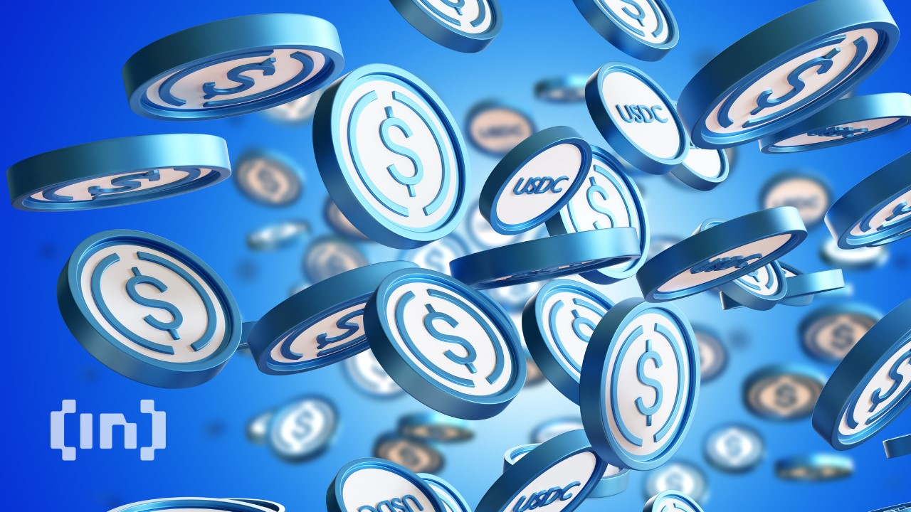

USDC THE STABLECOIN POWERHOUSE, HOW WORK USDC?
In the bustling realm of cryptocurrencies, USDC has emerged as a stalwart contender, offering stability and reliability in a volatile market. As a leading stablecoin, USDC has garnered significant attention and trust from both individuals and institutions alike. In this comprehensive exploration, we will delve into the intricacies of USDC, uncovering its origins, functionalities, and its pivotal role in the cryptocurrency landscape.

USDC, or USD Coin, is a stablecoin pegged to the value of the US dollar, providing a digital representation of fiat currency on the blockchain. Launched in 2018 by Circle and Coinbase, USDC operates on the Ethereum blockchain and is governed by the Centre Consortium, an open-source collaboration between these two leading cryptocurrency companies. What sets USDC apart is its steadfast commitment to transparency and regulatory compliance. Unlike some other stablecoins, USDC maintains a strict policy of full reserve backing, meaning that every USDC token in circulation is backed 1:1 by US dollars held in reserve accounts. This level of transparency and backing instills confidence in users, as they can trust that each USDC token holds real-world value equivalent to the US dollar. USDC's utility extends far beyond basic transactions. Its stability and liquidity make it an ideal tool for traders seeking refuge from cryptocurrency volatility, as well as a convenient medium for cross-border payments and remittances. Additionally, USDC serves as a bridge between the traditional financial system and the world of decentralized finance (DeFi), facilitating seamless integration and interoperability between these two realms. As the cryptocurrency market continues to evolve, USDC remains at the forefront, driving innovation and fostering trust within the digital asset ecosystem. Whether you're a seasoned trader, a DeFi enthusiast, or simply looking for a reliable digital dollar, USDC stands as a beacon of stability and security in an ever-changing landscape. Join us as we embark on a journey to uncover the limitless potential of USDC and its profound impact on the future of finance.